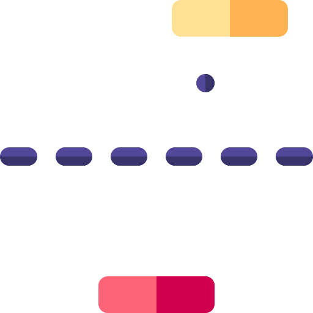
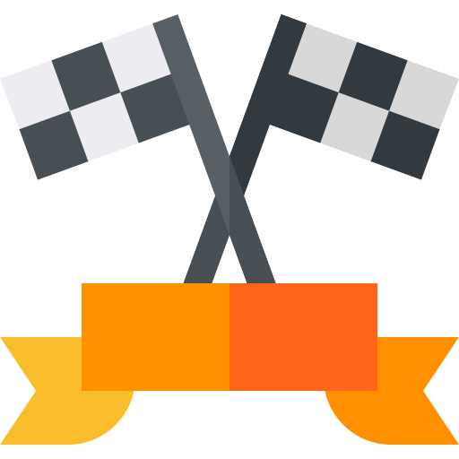

My projects

Django Website
This Website will help ypu to manage your tasks. You can add new tasks and delete completed ones. The Website is built using Django framework, Jinja template, SQLight database containing tasks titles and descriptions.
Review my code on GitHub!

Flask Website
This Website is an online-store. Users can add, buy or delete items. Website is also connected to 'Fondy' payment system (Testing regime).
Review my code on GitHub!

Stock Trading News Alert Project
This program compares today's Tesla stock price (TSLA (NASDAQ)) with yesterday's (at the close of the market). It also searches the 3 most popular news on the topic, if relative change is more than 5%.
Review my code on GitHub!

Flight Deals Project
This project will help you find plane tickets according to criteria such as: departure and arrival cities, departure date, maximum number of transfers.
Review my code on GitHub!

"Snake" Game
Classic Snake Game. Collect food pieces and keep snake growing! Program also keeps the record of the highest score. Use W,A,S,D for controlling your snake.
Review my code on GitHub!

Password Manager Project
This program will generate a password for you. It saves the information so the user can find it later using this program.
Review my code on GitHub!

Ping-Pong Game
Ping-Pong game for two players. Right paddle is controlled by UP,DOWN buttons, left paddle is controlled by W,S.
Review my code on GitHub!
"USA States" Game
The user sees a map with state borders. The main task is to name as many states as possible. When the state is named correctly, the user gets a point and the state name appears on the map.
Review my code on GitHub!

Project for learning Languages
This FlashCard app will help you learn French. "Pandas" is used in this project.
Review my code on GitHub!

"Pomodoro Technique" Project
The Pomodoro Technique is a time management method developed by Francesco Cirillo. It is a timer, which breaks work into intervals, based on Pomodoro Technique.
Review my code on GitHub!

"Cross the road" Game
Help tiny Turtle cross the road! Turtle is controlled by W,S. With each round, the cars move faster and faster.
Review my code on GitHub!

"Polynomial Approximation of Functions" Program
This program approximates any function or X-Y-arrays by a polynomial. For approximation, the "Least Squares Method" is used. Users can choose the power of the polynom.
Review my code on GitHub!

"Turtle Race" Game
This is a funny betting game, the user should place a bet on the turtle that will win the race!
Review my code on GitHub!